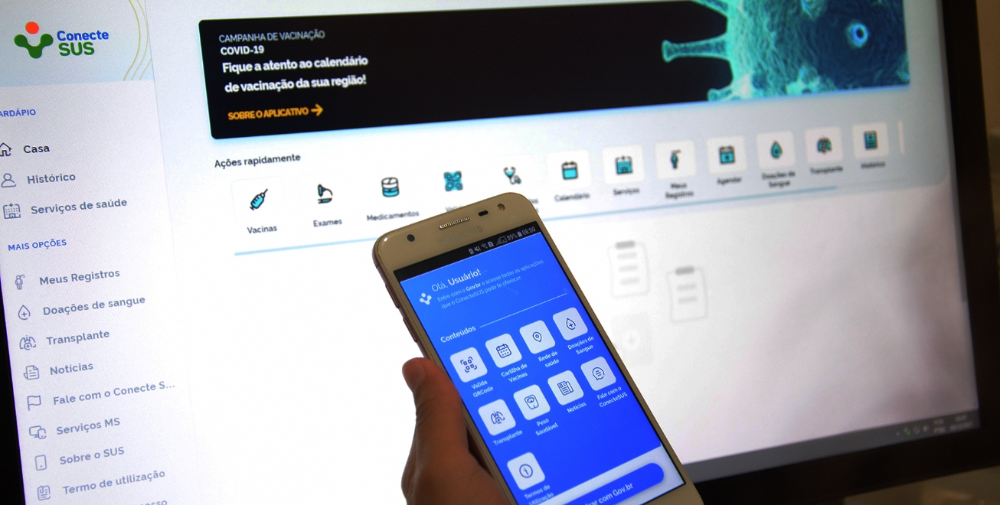

Módulo 4 | Aula 3
A Literacia Digital em Saúde como Competência para promover Saúde na APS
Tópico 2
A Literacia Digital em Saúde como uma competência para ampliar os níveis de LS
Fonte: Freepik
Quando se fala em Literacia Digital em Saúde, algumas considerações sobre as suas particularidades são necessárias para melhor compreensão, a começar por entendê-la como uma estratégia relevante para a busca de modelos salutogênicos, que incluem a cultura da paz, habitação, família, educação, espiritualidade, lazer, determinantes e condicionantes e a promoção da saúde em tempos de uma sociedade informacional. (MOREIRA; MARTINS; SABOGA-NUNES, 2020).
A Literacia Digital em Saúde representa a habilidade dos indivíduos em buscar informações sobre saúde nas mídias digitais, interpretá-las e qualificá-las frente a uma determinada situação e a partir disso adotar os conhecimentos adquiridos para solucionar um problema em saúde (VAART; DROSSAERT, 2017).
Portanto, segundo Yamaguchi et al. (2020), identificar o nível de Literacia Digital em Saúde dos usuários das redes sociais seria o primeiro passo para criar estratégias para fortalecer as Tecnologias da Informação e Comunicação (TICs), utilizando-as como ferramentas para promover a educação não formal no campo da saúde como também criar mecanismos para o “empowerment”, para reconhecer informações não confiáveis.
É preciso considerar que o entendimento do que é a Literacia Digital em Saúde só será possível a partir da compreensão sobre o conceito da Literacia Digital, uma vez que esta antecede e propicia aos cidadãos serem direcionados ou conduzidos para outras Literacias, em específico aqui para a saúde. Deste mesmo modo, a Literacia Digital em Saúde se relaciona com a LS e pode ser uma competência essencial para ampliar os níveis de LS.
question_mark
Saiba mais...
Acesse o material abaixo para saber mais sobre a tipologia das várias Literacias.
O conjunto de habilidades relacionadas à Literacia Digital em Saúde compreende àquelas relacionadas não apenas à saúde, mas também à alfabetização, conceitos numéricos, computadores, mídia, ciência e informação. Possuir todas essas habilidades integradas permitiria aos usuários obterem resultados positivos não apenas no comportamento relacionado à busca de informações, mas também uma maior probabilidade de se envolver em experiências proativas relacionadas à saúde (LEÃO DE SOUSA, 2020).
Fonte: Freepik
Assim, as pessoas com altos níveis de Literacia Digital em Saúde não apenas estão mais propensas a usar a Internet para responder a perguntas sobre saúde, mas também estão mais aptas a entender as informações que encontram, a avaliar a veracidade dessas informações, a discernir sobre a qualidade dos sites de saúde e a usar as informações para tomar decisões de saúde bem-informadas (BODIE E DUTTA, 2008, p. 193).
Fonte: Fiocruz Imagens
A Literacia Digital em Saúde em seu conjunto de habilidades pode influenciar positivamente os comportamentos para a busca de informações sobre saúde e a qualidade de vida dos cidadãos (MILNE et al., 2015 apud LEÃO DE SOUZA, 2020). E, portanto, compreender o que a impacta é importante para embasar a elaboração de políticas públicas (locais) de saúde.

Fonte: Prefeitura de Feira de Santana
A Literacia Digital em Saúde pode ser uma competência que amplia os níveis de LS, ao passo que contribui positivamente na busca crítica e reflexiva de informações sobre saúde. Reforçando a LS enquanto estratégia para a eficiência e a eficácia do SUS, é importante também para o fortalecimento das ações no âmbito da educação em saúde e da comunicação em saúde, de modo a alcançar indicadores positivos de saúde e qualidade de vida da população, bem como, ampliar o controle social dos cidadãos sobre as políticas públicas do Estado (SABOGA-NUNES; MARTINS; FARINELLI; JULIÃO, 2019).